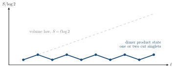

Advanced Quantum Materials 2027 · All lectures · Lecture notes
Session 7. Quantum Many-Body Entanglement and Tensor Networks
7.6 Entanglement entropy of a solvable dimerized chain
There are two exactly solvable models that show how (7.6)-(7.7) scale with the system size. They are the key to the whole session, so let us go through them carefully.
Let us take a one-dimensional chain of spin-1/2’s, but we couple the spins only in separate pairs. There is an antiferromagnetic bond between sites \(0\) and \(1\), another one between \(2\) and \(3\), another one between \(4\) and \(5\), and so on, and there is no coupling between different pairs,
\[H = \sum_n J\,\mathbf{S}_{2n}\cdot\mathbf{S}_{2n+1}.\]
This Hamiltonian is easy to solve exactly, because it is a sum of independent Heisenberg dimers. Its ground state is therefore an exact tensor product of singlets, with one singlet per dimer bond,
\[|\Psi\rangle = |\text{singlet}\rangle_{01} \otimes |\text{singlet}\rangle_{23} \otimes |\text{singlet}\rangle_{45} \otimes \cdots. \tag{7.8}\]
Physically, this is a valence-bond product state, also called a dimer product state, which is the simplest example of a gapped state with short-range entanglement, and not a spin liquid. The ground state does not break any symmetry of this Hamiltonian, and it is separated from the lowest triplet excitation by a large gap, which is the singlet-triplet splitting of a single dimer. For this reason it is as far from criticality as a spin model can be.
Now we divide the chain into two parts and ask for the entanglement entropy. Since (7.8) is a tensor product over separate bonds, the reduced density matrix \(\rho_A\) factorizes bond by bond. A dimer that is fully inside \(A\), or fully inside \(B\), gives a pure state in \(\rho_A\), and therefore it gives exactly zero to \(S\), with the same argument as for the product state in Section 7.5. The only bonds that contribute are the ones that are cut by the boundary between the two parts. Each cut bond gives the single-dimer result (7.7), \(\log 2\), since tracing out one half of a singlet always leaves the same maximally mixed single-site density matrix, regardless of what happens in the rest of the chain. So if the boundary cuts \(n_\text{cut}\) bonds, \(S = n_\text{cut} \log 2\).
Let us take a small subsystem \(A\) whose two ends cut through two dimers, one on each side. Then two singlet bonds cross the boundary, so \(S = 2\log 2\). Let us now take a much larger subsystem \(A\), with a width of many dimers, whose ends again cut through one dimer each. The boundary still crosses only two singlet bonds, the ones at its two edges, so we get again \(S = 2\log 2\), with no change. The entanglement entropy of this state does not grow with the size of the subsystem. It is fully determined by the two points where the one-dimensional boundary is, for any distance between these two points.

The dimers are the pairs of sites \((0,1)\), \((2,3)\), \((4,5)\) and so on. Which block of sites has exactly zero entanglement entropy in the state (7.8)?
Show the answers
- A. ✗ False
This is false. The block contains the dimer \((2,3)\) but it cuts \((0,1)\) at site 1 and \((4,5)\) at site 4. Two singlets are cut and the entropy is \(2\log2\).
- B. ✓ True
This is true. The block contains the dimers \((2,3)\) and \((4,5)\) completely, and its two boundaries fall between dimers. No singlet is cut, so the entropy is zero.
- C. ✗ False
This is false. The block cuts the dimer \((2,3)\) at site 3 and the dimer \((6,7)\) at site 6. Two singlets are cut and the entropy is \(2\log2\), not zero.
A block of sites 1 to 3 is taken from the same state. What is its entropy?
Show the answers
- A. ✗ False
This is false. The site 1 is paired with site 0, which is outside the block. This singlet is cut and it adds \(\log2\), even if the dimer \((2,3)\) is inside.
- B. ✗ False
This is false. The right boundary falls between the dimers \((2,3)\) and \((4,5)\) and cuts nothing. The block of sites 2 to 5 of the previous question also has two boundaries and its entropy is zero.
- C. ✓ True
This is true. The dimer \((2,3)\) is inside the block, and the dimer \((0,1)\) is cut at the left end. The right end cuts nothing, so there is one cut singlet.